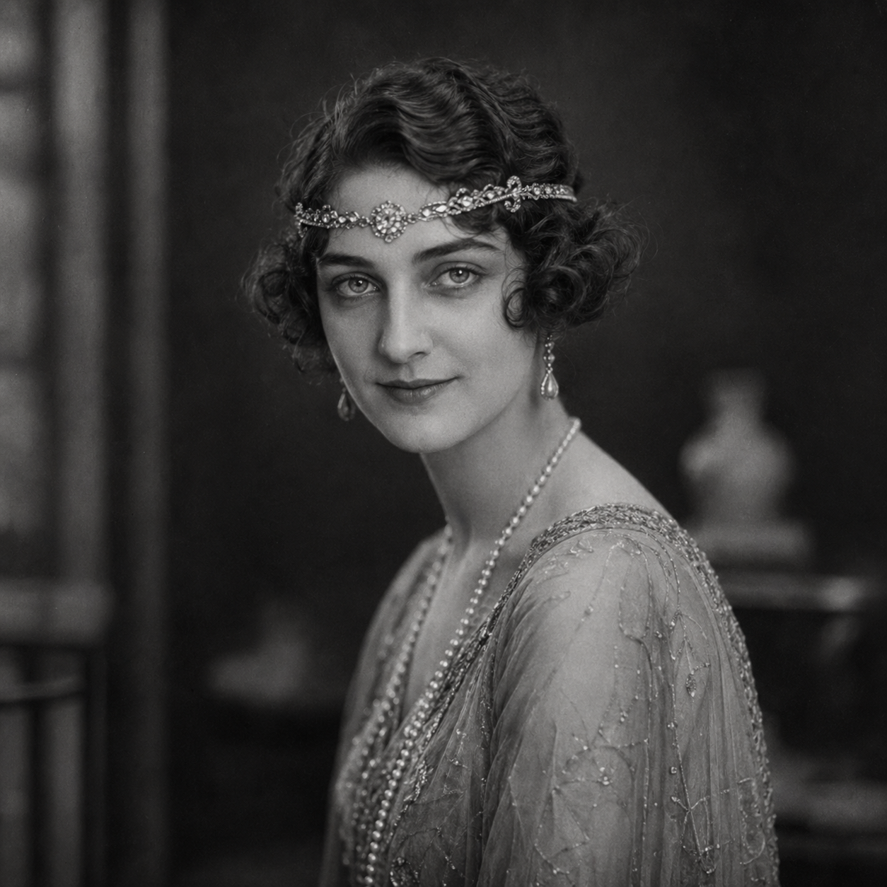

Melody Manners
(374½ Points)
Female; Age 28; 5'2", 115 lbs.
| ST: 9/11 [-10] | IQ: 16 [80] | Speed: 6.50 |
| DX: 15 [60] | HT: 11/9 [10] | Move: 6 |
| Dodge: 6/5 | Parry: 8 |
Advantages
Ally (Faerie Lion - Chuff) (451 to 500, 15 or less) [135]; Charisma +2 [10] (Reaction: +2); Animal Empathy [5] (Reaction: +2/+4); Comfortable Wealth [10] (Starting Wealth: $1,500); Absolute Direction [5]; Danger Sense [15]; Lang: English (Native) [0]; Lang: Gaelic (Accented Spoken/Accented Written) [4]; Patron (Followers of the Right Hand) (15 or less) [60] (Equipment: Standard, +5; Special Qualities (Access to Magic in Non-magical World): Very Unusual, +10; Secret: -5; Subtraction (Minimal Intervention): -5); Special Rapport [10]; Unusual Background (Grandmother was a Half-Faerie Witch) [10]; Beautiful [15] (Reaction: +2/+4).
Disadvantages
Duty (15 or less) [-25] (Involuntary: -5; Subtraction (Extremely Hazardous): -5); Enemy (Unknown Enemies of FRH) [-60] (Unknown: -5; Subtraction (Access to Magic in Non-magical World): -15); Second Class Citizen (Woman) [-5] (Reaction: -1); Secret (a real Faerie) [-20]; Secret (One-quarter Faerie by Blood) [-30]; Staurophobia (Fear of Crosses and Crucifx) (Mild) [-10]; Vulnerability 1 (Pure Iron) (Occasional) [-10]; Weirdness Magnet [-15].
Quirks
Believes in Fate; Believes in astrology; Chocoholic; Hates broccoli; Dislikes authority. [-5]Skills
Accounting-15 [2]; Riding (Chuff)-17* [½]; First Aid/TL6-17 [2]; Acrobatics-13 [1]; Acting-17 [3½]; Area Knowledge (Atlantic City)-17 [2]; Bard-19* [4]; Boating-13 [½]; Bow-14 [2]; Boxing-13 [½] (Parry: 8); Carousing-13 [8]; Choreography-16 [2]; Courtesan-16 [1]; Dancing-14 [1]; Detect Lies-16 [4]; Diplomacy-15 [2]; Disguise-16 [2]; Driving/TL6 (Automobile)-14 [1]; Erotic Art-14 [2]; Escape-12 [½]; Faerie Lore-16 [2]; Fast-Draw (Knife)-14 [½]; Fast-Draw (Pistol)-14 [½]; Fast-Talk-17 [4]; Filch-13 [½]; Forgery/TL6-15 [2]; Fortune Telling-18* [4]; Gambling-17 [4]; Guns/TL6 (Pistol)-18 [2]; Holdout-16 [2]; Illusion Art-15 [2]; Intimidation-16 [2]; Knife-15 [1] (Parry: 6); Knife Throwing-15 [1]; Law-15 [2]; Leadership-17* [4]; Lip Reading-16 [2]; Lockpicking/TL6-16 [2]; Lucid Dreaming-17 [2]; Merchant-17 [4]; Motorcycle/TL6-14 [½]; Orienteering-16 [2]; Performance-17 [0]; Pickpocket-14 [2]; Poetry-16 [2]; Politics-16 [2]; Running (Move: 7.875)-11 [4]; Savoir-Faire (Show Business)-20 [8]; Scrounging-17 [2]; Sex Appeal-14 [8]; Shadowing-16 [2]; Singing-13 [4]; Sleight of Hand-14 [2]; Stage Combat-14 [1]; Stealth-15 [2]; Streetwise-16 [2]; Survival (Woodlands)-16 [2]; Swimming-14 [½]; Tracking-16 [2]; Typing/TL6-14 [½] (Typing Speed (Manual) (wpm): 42, Typing Speed (Electric) (wpm): 70); Writing-16 [2].
*Cost modifiers: Animal Empathy, Charisma.
Equipment
Belt, Leather (½ lbs.; $¾; TL: 6); Cigarette Lighter ($1); Clothing, Formal (4 lbs.; $20; TL: 6); Disguise Kit (7 lbs.; $50; +2 to Disguise); Gloves, Winter (1 lb.; $4; TL: 6); Knife (small) (cut 1d-4, imp 1d-3, Skill: 15, Parry: 6; 1 lb.; $30; Reach: C, 1;C); Overcoat, Business (3 lbs.; $10; TL: 6; +4 to holdout); Remington Double-Derringer, .41 (cr 1d+, Skill: 18; ½ lbs.; $10; Malfunction: Crit.; SS: 11; Acc: 1; Half DMG: 80; MAX: 650; RoF: 1; Shots: 2; ST: 9; Rcl: -1; TL: 5; AWt: 0.05; Hold: 2); Scarf, Silk (¼ lbs.; $5; TL: 6); Shoes (PD 0, DR 1; 2 lbs.; $8); Smith & Wesson Military & Police .38 Special (cr 2d-1, Skill: 18; 2 lbs.; $30; Malfunction: crit.; SS: 10; Acc: 2; Half DMG: 120; MAX: 1500; RoF: 3~; Shots: 6; ST: 8; Rcl: -1; TL: 6); Watch ($5).Description
Melody Manners survives by being exactly the sort of person human beings underestimate until it is too late. She is beautiful, socially fluid, fate-leaning, and faintly unreal even before anyone guesses how much faerie blood is actually moving under the surface. Melody knows how to charm a room, redirect a conversation, make a lie feel more comfortable than the truth, and move through the kinds of spaces where performance, seduction, danger, and opportunity all share a wall. She is not only decorative and not only a con artist. She is a liminal operator, someone built to turn glamour into access and access into leverage.That would already be enough to make her risky. Chuff is what makes her impossible to mistake for anything ordinary. He is not a separate free-floating companion so much as the inhuman truth that lives too close to her life to ever be excluded from it. He only works because he can remain near her, hide when necessary, survive what should not be survivable, and protect both Melody and the secrets around her. Together they create a pressure field rather than merely a duo: the socially legible fae-touched woman and the creature who proves the strangeness is not metaphorical. That is why their presence changes the gravity of a party so quickly. Melody makes the human world porous; Chuff makes sure the other side is already standing there when it opens.
For a new player, Melody should feel like someone who can talk her way into delicate spaces and survive the consequences only because she was never entirely human to begin with. Chuff should feel less like a pet or mascot and more like the protective, half-hidden shadow of that same truth. They belong together because the story they tell is one story: glamour with teeth, secrecy with loyalty, and the unsettling knowledge that the thing keeping her alive is also one of the clearest signs that she does not belong fully to the ordinary world anymore.